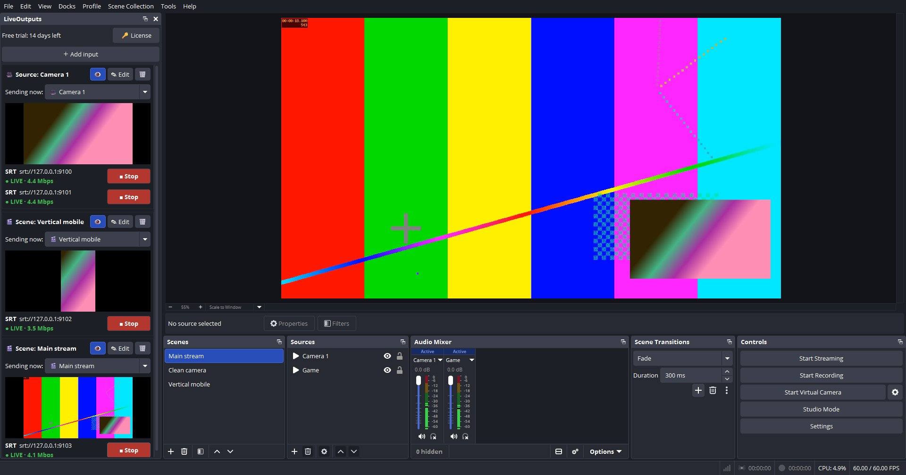

LiveOutputs is a plugin for OBS Studio. Send each scene or source to its own RTMP, RTMPS or SRT destinations, independently, without touching your main stream or recording.
Download free 14-day trial See examplesA plugin that installs inside OBS Studio (not a separate program). Full version during the trial. No account, no credit card. Windows 10/11.

The plugin turns any source or scene into a stream you can send anywhere that accepts RTMP, RTMPS or SRT.
Send each camera on its own to a producer or a remote director.
Move a scene to another computer over SRT or RTMP and receive it there, for example in another OBS.
A clean picture without overlays for the people who need to see your show.
Feed a screen in another room or venue with the exact picture you choose.
Push each source to your own server so each one can be recorded or processed separately.
Contribute any source or scene to a server you run, for further distribution.
A few real setups, drawn to scale: what each destination actually receives.
Mix RTMP, RTMPS and SRT freely. Each destination has its own address, key and status.
Send the full 16:9 layout to one platform and a 9:16 vertical version to another, at the same time, from the same OBS.
Platform names are examples. They belong to their owners and are not affiliated with LiveOutputs.
Your audience sees the overlays. A guest, producer or second venue gets the same picture without them.
Up and running in a few minutes.
Run the installer and restart OBS Studio.
Go to Docks → LiveOutputs.
Click Add input, choose a scene or source and add its destinations.
Press Start on each destination whenever you want.
Try everything first. Pricing will be announced at launch.
Hear the price and launch date first.
A plugin for OBS Studio, not a standalone program: the installer adds it to OBS, where it appears as a panel (Docks → LiveOutputs). Windows 10/11 (64-bit) and OBS Studio 31 or newer.
Download the LiveOutputs plugin 1.0.2 (Windows)Windows may show an “unknown publisher” warning when you run the installer, because the plugin is not yet code-signed. Choose “More info → Run anyway”. Code signing is planned for a later release.
Questions, ideas or want to know when it launches? Write here. No account needed.
Not mainly. Multistream plugins repeat the same program output on several platforms. LiveOutputs is built to send individual OBS sources and scenes over the network, each with its own picture and destinations. You can also use it to send different pictures to different platforms.
No. Each input has its own independent pipeline, so your main stream and recording are not touched.
Each active input encodes its own video, so load grows with the number of inputs. You can choose a GPU encoder (NVENC and others) to keep the CPU free.
Streaming stops until you enter a license key. Your configuration stays saved.
Any service that accepts RTMP, RTMPS or SRT, using the address and key they give you.
No. License keys are checked on your computer; no account and no server are needed.